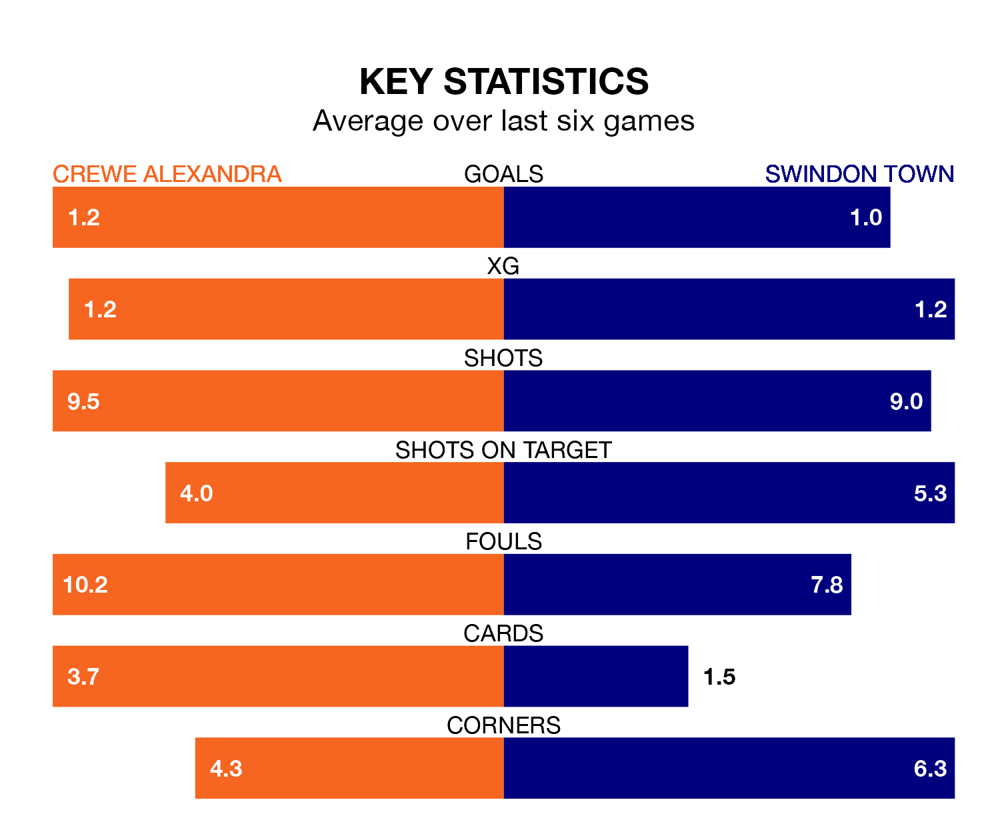

Swindon Town come to the Mornflake Stadium to play Crewe Alexandra on Saturday in poor form, having collected just four points from their last six games.
The visitors have won one and drawn one of their last six fixtures, while the Railwaymen have two wins and two draws.
With 48 goals in 26 games so far this season, Crewe are scoring more than average in the league with 1.8 goals per game. And they are conceding at an average rate, letting in 39 goals at a rate of 1.5 per game.
Swindon are also above average scorers, with 1.8 goals per game, compared to a league average of 1.5. They have conceded 1.9 goals per game.
In Jake Young, Town have one of the league's most on-form strikers so far this season. He has notched 16 goals in 25 appearances, to sit second in the scoring charts.
His goal rate of one every 123 minutes is quicker than that of Chris Long, the Railwaymen's top scorer with a goal every 155 minutes, and a total of nine goals in 19 games.
In the last 10 years, Crewe and Swindon have played each other on 17 occasions. Crewe won six of them, Swindon eight, and they drew three times.
On average, the Railwaymen scored 1.5 goals and the Robins 1.9 in those matches.
Their last meeting was on August 12, when they played out a 2-2 draw.
The home side are fifth in the table after 26 games, of which they have won 12 and drawn eight, earning 44 points.
The Robins are 10 places behind Crewe in 15th, with nine wins and seven draws putting them on 34 points.
Crewe's last match was on January 6, a 1-0 win against Mansfield Town, with Joe White getting the goal for the Railwaymen.
Swindon drew 2-2 with Colchester United last time out, also on January 6, with Charlie Austin and Tom Brewitt on the scoresheet.
Updated: 15:34, 08/01/24